2024 Higher Computing Science questions
Source: Scottish Qualifications Authority (SQA) / Qualifications Scotland. This is a StemInteract HTML companion, not an official HTML edition. Selectable text is supplied alongside original page images. Use the images or original PDF for equations, powers, fractions, vector notation, tables and diagrams; text extraction cannot fully preserve mathematical layout.
Jump to a question
PDF page 1
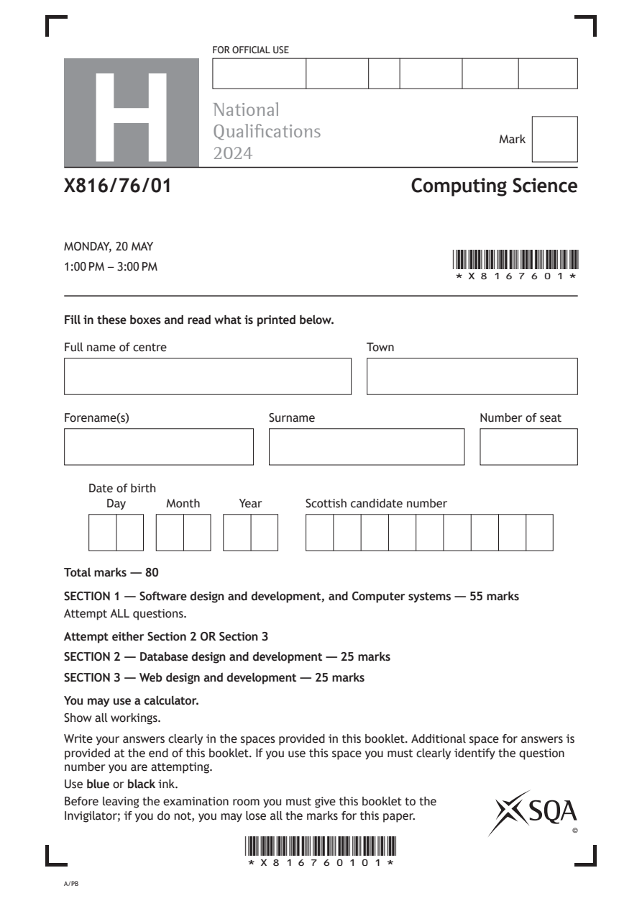
Selectable page text
FOR OFFICIAL USE
H
National
Qualications
Mark
2024
X816/76/01 Computing Science
MONDAY, 20 MAY
1:00 PM – 3:00 PM
*X8167601*
Fill in these boxes and read what is printed below.
Full name of centre Town
Forename(s) Surname Number of seat
Date of birth
Day Month Year Scottish candidate number
Total marks — 80
SECTION 1 — Software design and development, and Computer systems — 55 marks
Attempt ALL questions.
Attempt either Section 2 OR Section 3
SECTION 2 — Database design and development — 25 marks
SECTION 3 — Web design and development — 25 marks
You may use a calculator.
Show all workings.
Write your answers clearly in the spaces provided in this booklet. Additional space for answers is
provided at the end of this booklet. If you use this space you must clearly identify the question
number you are attempting.
Use blue or black ink.
Before leaving the examination room you must give this booklet to the
Invigilator; if you do not, you may lose all the marks for this paper.
©
*X816760101*
A/PBPDF page 2
Question 1Question 2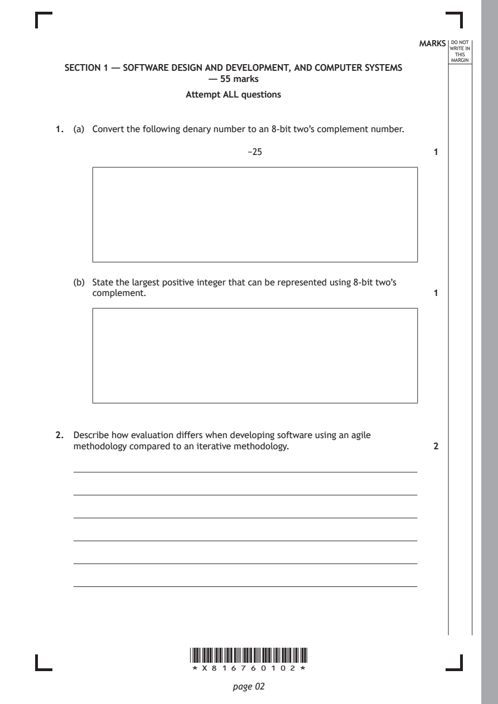
Selectable page text
MARKS DO NOT
WRITE IN
THIS
MARGIN
SECTION 1 — SOFTWARE DESIGN AND DEVELOPMENT, AND COMPUTER SYSTEMS
— 55 marks
Attempt ALL questions
1. (a) Convert the following denary number to an 8‑bit two’s complement number.
−25 1
(b) State the largest positive integer that can be represented using 8‑bit two’s
complement. 1
2. Describe how evaluation differs when developing software using an agile
methodology compared to an iterative methodology. 2
*X816760102*
page 02PDF page 3
Question 3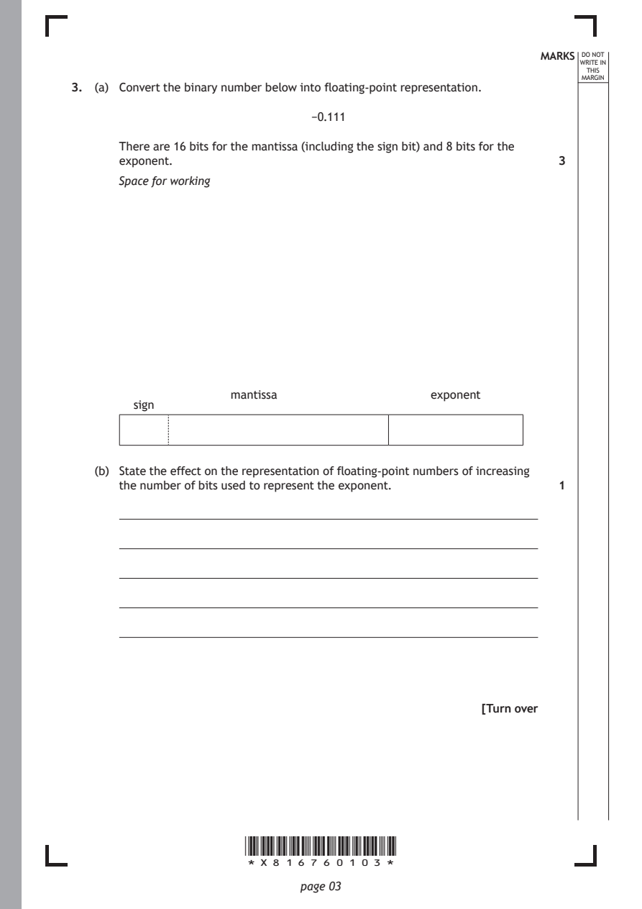
Selectable page text
MARKS DO NOT
WRITE IN
THIS
MARGIN
3. (a) Convert the binary number below into floating‑point representation.
−0.111
There are 16 bits for the mantissa (including the sign bit) and 8 bits for the
exponent. 3
Space for working
mantissa exponent
sign
(b) State the effect on the representation of floating‑point numbers of increasing
the number of bits used to represent the exponent. 1
[Turn over
*X816760103*
page 03PDF page 4
Question 4Question 5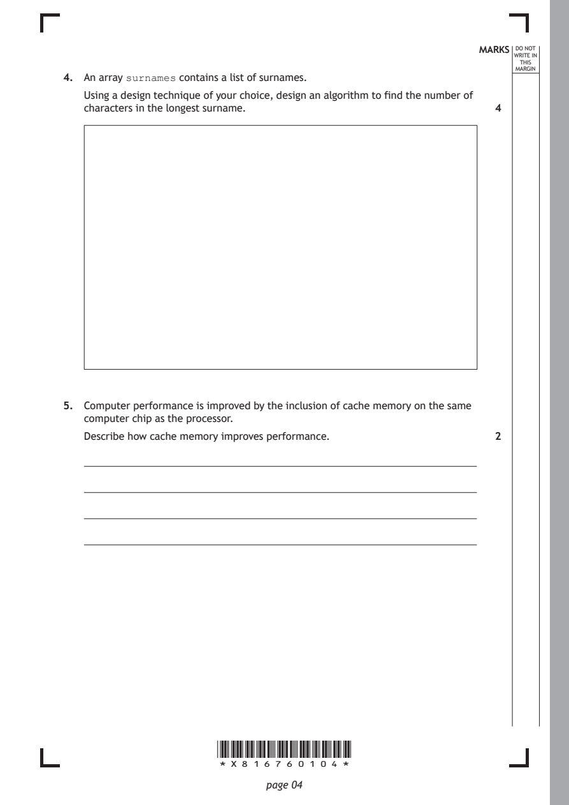
Selectable page text
MARKS DO NOT
WRITE IN
THIS
MARGIN
4. An array contains a list of surnames.
surnames
Using a design technique of your choice, design an algorithm to find the number of
characters in the longest surname. 4
5. Computer performance is improved by the inclusion of cache memory on the same
computer chip as the processor.
Describe how cache memory improves performance. 2
*X816760104*
page 04PDF page 5
Question 6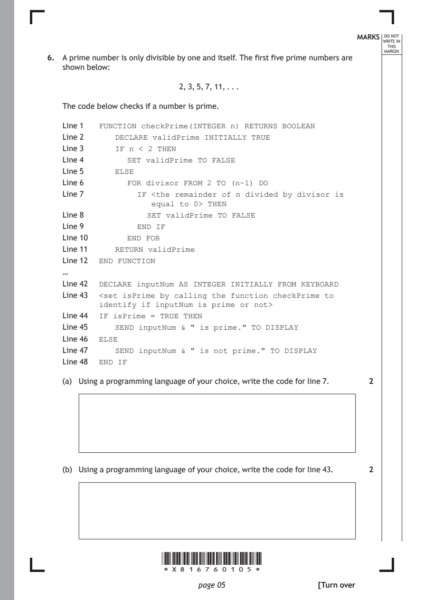
Selectable page text
MARKS DO NOT
WRITE IN
THIS
MARGIN
6. A prime number is only divisible by one and itself. The first five prime numbers are
shown below:
2, 3, 5, 7, 11, . . .
The code below checks if a number is prime.
Line 1
FUNCTION checkPrime(INTEGER n) RETURNS BOOLEAN
Line 2
DECLARE validPrime INITIALLY TRUE
Line 3
IF n < 2 THEN
Line 4
SET validPrime TO FALSE
Line 5
ELSE
Line 6
FOR divisor FROM 2 TO (n−1) DO
Line 7
IF <the remainder of n divided by divisor is
equal to 0> THEN
Line 8
SET validPrime TO FALSE
Line 9
END IF
Line 10
END FOR
Line 11
RETURN validPrime
Line 12
END FUNCTION
…
Line 42
DECLARE inputNum AS INTEGER INITIALLY FROM KEYBOARD
Line 43
<set isPrime by calling the function checkPrime to
identify if inputNum is prime or not>
Line 44
IF isPrime = TRUE THEN
Line 45
SEND inputNum & " is prime." TO DISPLAY
Line 46
ELSE
Line 47
SEND inputNum & " is not prime." TO DISPLAY
Line 48
END IF
(a) Using a programming language of your choice, write the code for line 7. 2
(b) Using a programming language of your choice, write the code for line 43. 2
*X816760105*
page 05 [Turn overPDF page 6
Question 7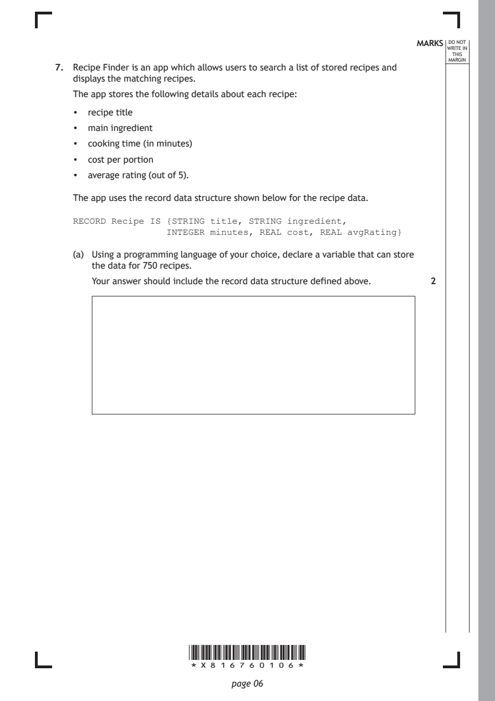
Selectable page text
MARKS DO NOT
WRITE IN
THIS
MARGIN
7. Recipe Finder is an app which allows users to search a list of stored recipes and
displays the matching recipes.
The app stores the following details about each recipe:
• recipe title
• main ingredient
• cooking time (in minutes)
• cost per portion
• average rating (out of 5).
The app uses the record data structure shown below for the recipe data.
RECORD Recipe IS {STRING title, STRING ingredient,
INTEGER minutes, REAL cost, REAL avgRating}
(a) Using a programming language of your choice, declare a variable that can store
the data for 750 recipes.
Your answer should include the record data structure defined above. 2
*X816760106*
page 06PDF page 7
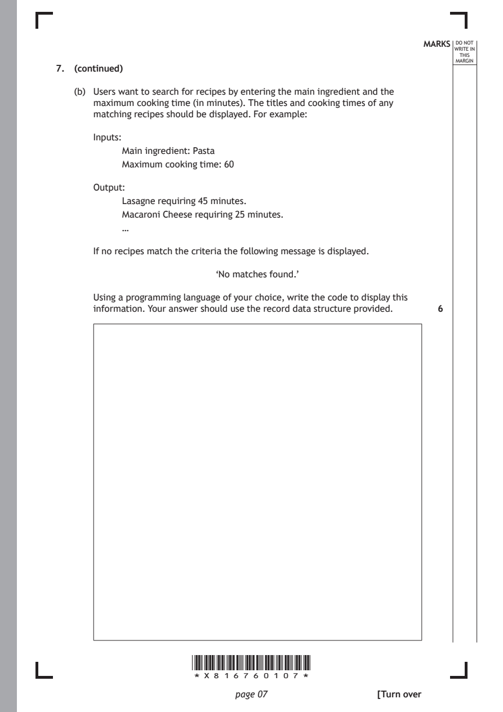
Selectable page text
MARKS DO NOT
WRITE IN
THIS
MARGIN
7. (continued)
(b) Users want to search for recipes by entering the main ingredient and the
maximum cooking time (in minutes). The titles and cooking times of any
matching recipes should be displayed. For example:
Inputs:
Main ingredient: Pasta
Maximum cooking time: 60
Output:
Lasagne requiring 45 minutes.
Macaroni Cheese requiring 25 minutes.
…
If no recipes match the criteria the following message is displayed.
‘No matches found.’
Using a programming language of your choice, write the code to display this
information. Your answer should use the record data structure provided. 6
*X816760107*
page 07 [Turn overPDF page 8
Question 8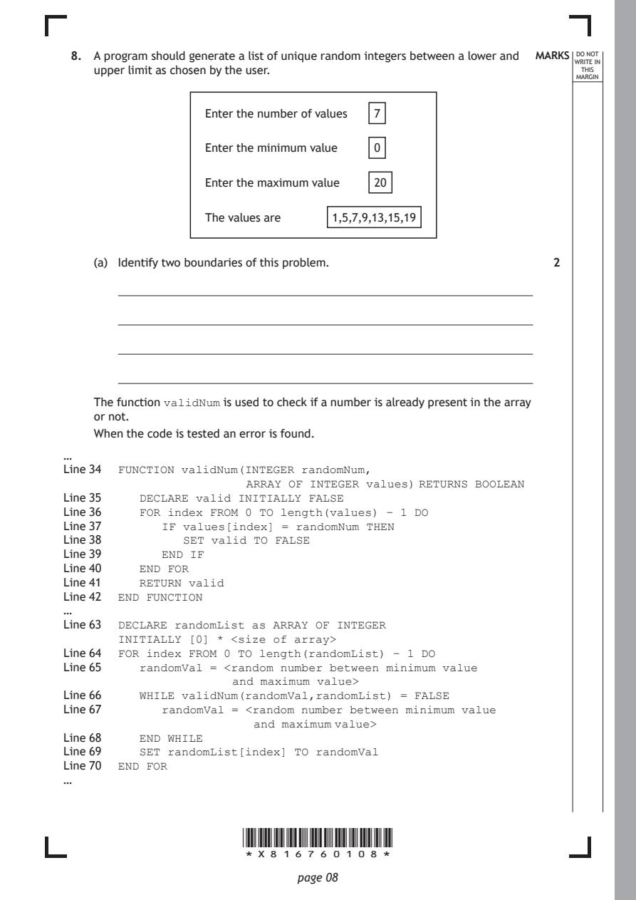
Selectable page text
8. A program should generate a list of unique random integers between a lower and MARKS DO NOT
WRITE IN
upper limit as chosen by the user. THIS
MARGIN
Enter the number of values 7
Enter the minimum value 0
Enter the maximum value 20
The values are 1,5,7,9,13,15,19
(a) Identify two boundaries of this problem. 2
The function is used to check if a number is already present in the array
validNum
or not.
When the code is tested an error is found.
…
Line 34
FUNCTION validNum(INTEGER randomNum,
ARRAY OF INTEGER values) RETURNS BOOLEAN
Line 35
DECLARE valid INITIALLY FALSE
Line 36
FOR index FROM 0 TO length(values) − 1 DO
Line 37
IF values[index] = randomNum THEN
Line 38
SET valid TO FALSE
Line 39
END IF
Line 40
END FOR
Line 41
RETURN valid
Line 42
END FUNCTION
…
Line 63
DECLARE randomList as ARRAY OF INTEGER
INITIALLY [0] * <size of array>
Line 64
FOR index FROM 0 TO length(randomList) − 1 DO
Line 65
randomVal = <random number between minimum value
and maximum value>
Line 66
WHILE validNum(randomVal,randomList) = FALSE
Line 67
randomVal = <random number between minimum value
and maximum value>
Line 68
END WHILE
Line 69
SET randomList[index] TO randomVal
Line 70
END FOR
…
*X816760108*
page 08PDF page 9
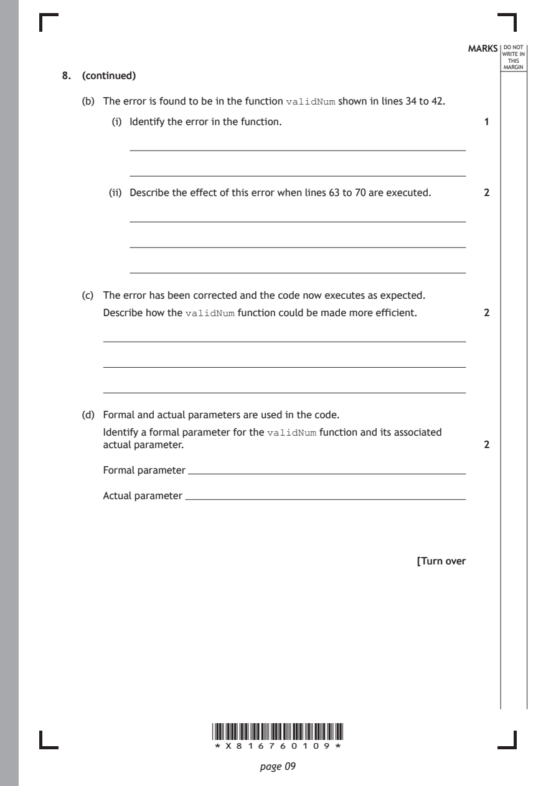
Selectable page text
MARKS DO NOT
WRITE IN
THIS
MARGIN
8. (continued)
(b) The error is found to be in the function shown in lines 34 to 42.
validNum
(i) Identify the error in the function. 1
(ii) Describe the effect of this error when lines 63 to 70 are executed. 2
(c) The error has been corrected and the code now executes as expected.
Describe how the function could be made more efficient. 2
validNum
(d) Formal and actual parameters are used in the code.
Identify a formal parameter for the function and its associated
validNum
actual parameter. 2
Formal parameter
Actual parameter
[Turn over
*X816760109*
page 09PDF page 10
Question 9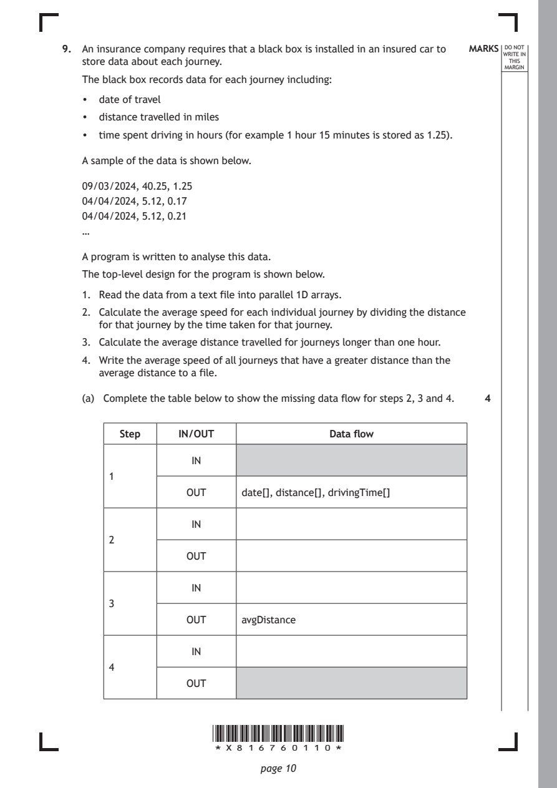
Selectable page text
9. An insurance company requires that a black box is installed in an insured car to MARKS DO NOT
WRITE IN
store data about each journey. THIS
MARGIN
The black box records data for each journey including:
• date of travel
• distance travelled in miles
• time spent driving in hours (for example 1 hour 15 minutes is stored as 1.25).
A sample of the data is shown below.
09/03/2024, 40.25, 1.25
04/04/2024, 5.12, 0.17
04/04/2024, 5.12, 0.21
…
A program is written to analyse this data.
The top‑level design for the program is shown below.
1. Read the data from a text file into parallel 1D arrays.
2. Calculate the average speed for each individual journey by dividing the distance
for that journey by the time taken for that journey.
3. Calculate the average distance travelled for journeys longer than one hour.
4. Write the average speed of all journeys that have a greater distance than the
average distance to a file.
(a) Complete the table below to show the missing data flow for steps 2, 3 and 4. 4
Step IN/OUT Data flow
IN
1
OUT date[], distance[], drivingTime[]
IN
2
OUT
IN
3
OUT avgDistance
IN
4
OUT
*X816760110*
page 10PDF page 11
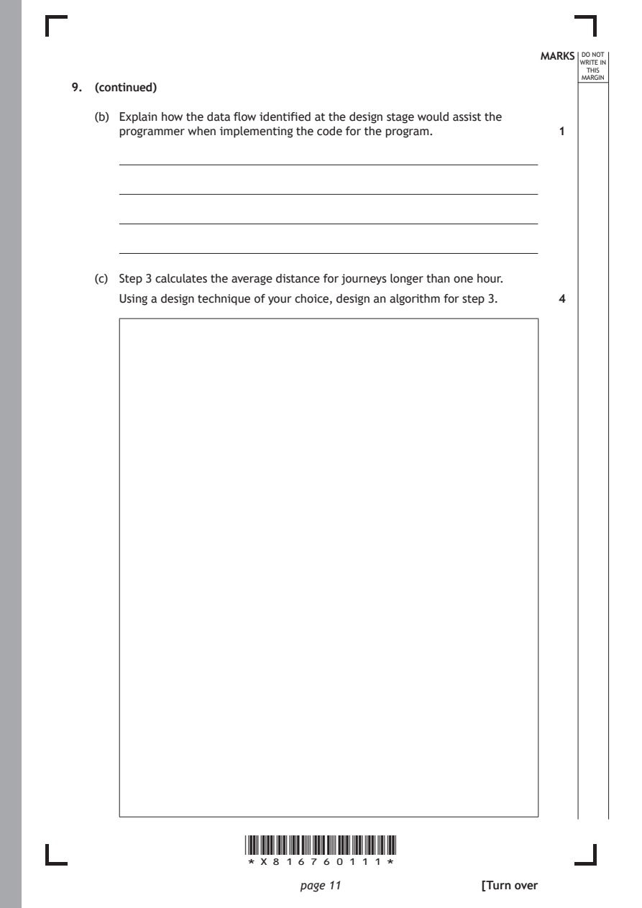
Selectable page text
MARKS DO NOT
WRITE IN
THIS
MARGIN
9. (continued)
(b) Explain how the data flow identified at the design stage would assist the
programmer when implementing the code for the program. 1
(c) Step 3 calculates the average distance for journeys longer than one hour.
Using a design technique of your choice, design an algorithm for step 3. 4
*X816760111*
page 11 [Turn overPDF page 12
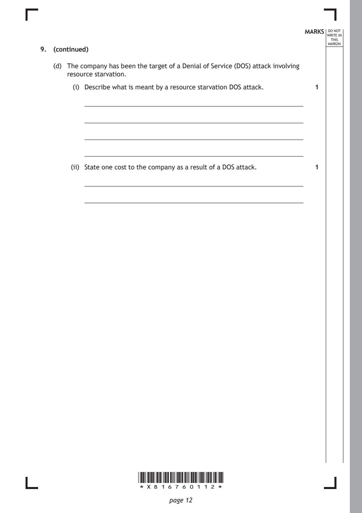
Selectable page text
MARKS DO NOT
WRITE IN
THIS
MARGIN
9. (continued)
(d) The company has been the target of a Denial of Service (DOS) attack involving
resource starvation.
(i) Describe what is meant by a resource starvation DOS attack. 1
(ii) State one cost to the company as a result of a DOS attack. 1
*X816760112*
page 12PDF page 13
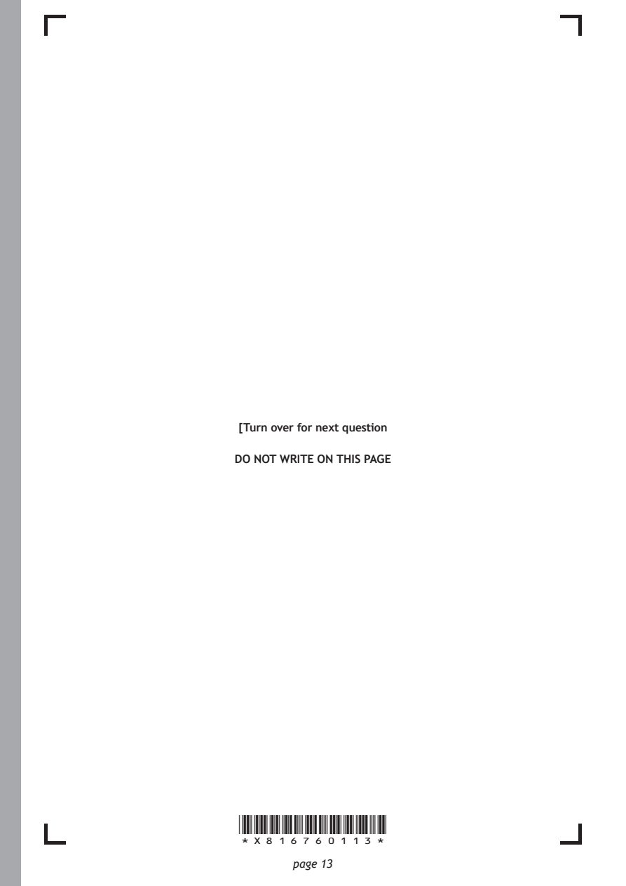
Selectable page text
[Turn over for next question
DO NOT WRITE ON THIS PAGE
*X816760113*
page 13PDF page 14
Question 10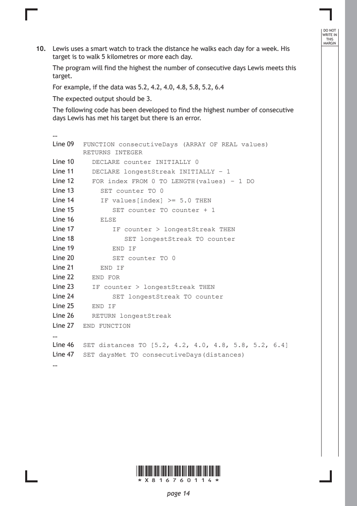
Selectable page text
DO NOT
WRITE IN
THIS
MARGIN
10. Lewis uses a smart watch to track the distance he walks each day for a week. His
target is to walk 5 kilometres or more each day.
The program will find the highest the number of consecutive days Lewis meets this
target.
For example, if the data was 5.2, 4.2, 4.0, 4.8, 5.8, 5.2, 6.4
The expected output should be 3.
The following code has been developed to find the highest number of consecutive
days Lewis has met his target but there is an error.
…
Line 09
FUNCTION consecutiveDays (ARRAY OF REAL values)
RETURNS INTEGER
Line 10
DECLARE counter INITIALLY 0
Line 11
DECLARE longestStreak INITIALLY − 1
Line 12
FOR index FROM 0 TO LENGTH(values) − 1 DO
Line 13
SET counter TO 0
Line 14
IF values[index] >= 5.0 THEN
Line 15
SET counter TO counter + 1
Line 16
ELSE
Line 17
IF counter > longestStreak THEN
Line 18
SET longestStreak TO counter
Line 19
END IF
Line 20
SET counter TO 0
Line 21
END IF
Line 22
END FOR
Line 23
IF counter > longestStreak THEN
Line 24
SET longestStreak TO counter
Line 25
END IF
Line 26
RETURN longestStreak
Line 27
END FUNCTION
…
Line 46
SET distances TO [5.2, 4.2, 4.0, 4.8, 5.8, 5.2, 6.4]
Line 47
SET daysMet TO consecutiveDays(distances)
…
*X816760114*
page 14PDF page 15
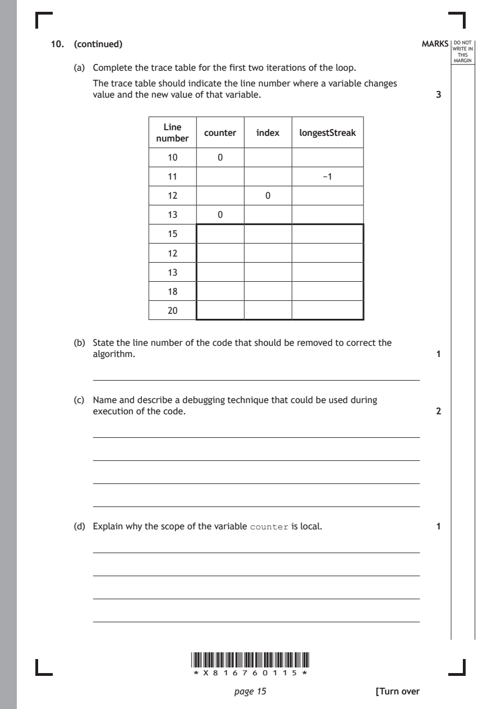
Selectable page text
10. (continued) MARKS DO NOT
WRITE IN
THIS
MARGIN
(a) Complete the trace table for the first two iterations of the loop.
The trace table should indicate the line number where a variable changes
value and the new value of that variable. 3
Line
counter index longestStreak
number
10 0
11 −1
12 0
13 0
15
12
13
18
20
(b) State the line number of the code that should be removed to correct the
algorithm. 1
(c) Name and describe a debugging technique that could be used during
execution of the code. 2
(d) Explain why the scope of the variable is local. 1
counter
*X816760115*
page 15 [Turn overPDF page 16
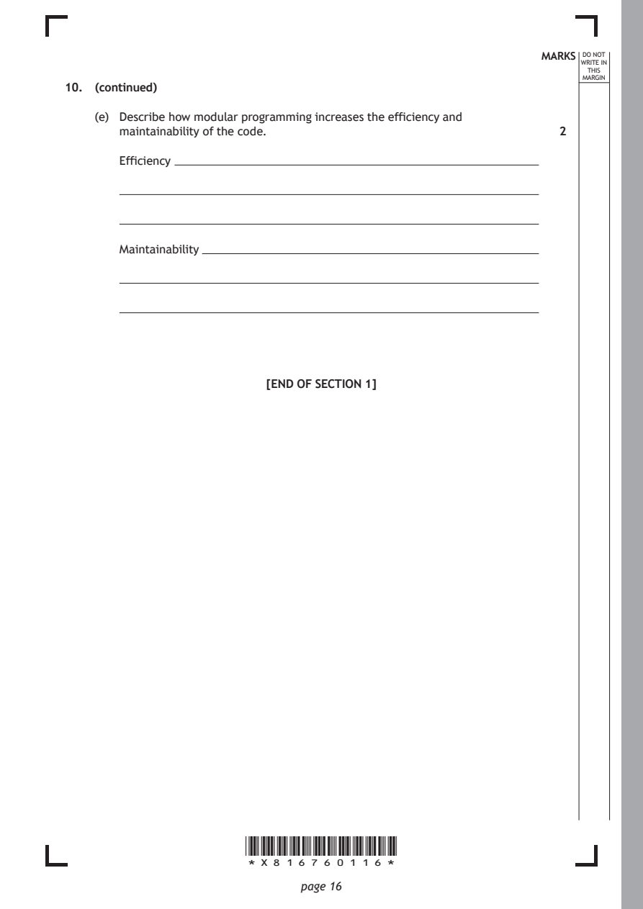
Selectable page text
MARKS DO NOT
WRITE IN
THIS
MARGIN
10. (continued)
(e) Describe how modular programming increases the efficiency and
maintainability of the code. 2
Efficiency
Maintainability
[END OF SECTION 1]
*X816760116*
page 16PDF page 17
Question 11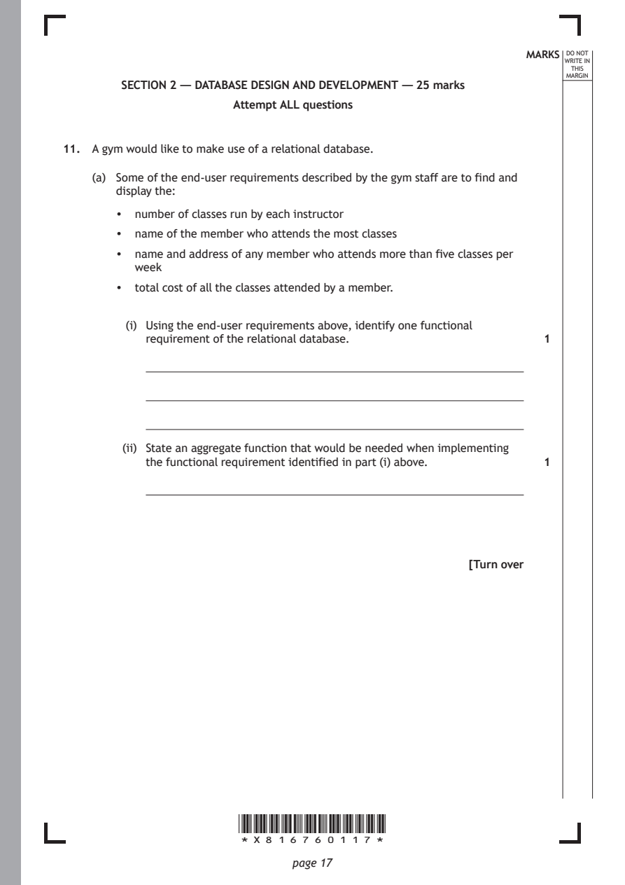
Selectable page text
MARKS DO NOT
WRITE IN
THIS
MARGIN
SECTION 2 — DATABASE DESIGN AND DEVELOPMENT — 25 marks
Attempt ALL questions
11. A gym would like to make use of a relational database.
(a) Some of the end‑user requirements described by the gym staff are to find and
display the:
• number of classes run by each instructor
• name of the member who attends the most classes
• name and address of any member who attends more than five classes per
week
• total cost of all the classes attended by a member.
(i) Using the end‑user requirements above, identify one functional
requirement of the relational database. 1
(ii) State an aggregate function that would be needed when implementing
the functional requirement identified in part (i) above. 1
[Turn over
*X816760117*
page 17PDF page 18
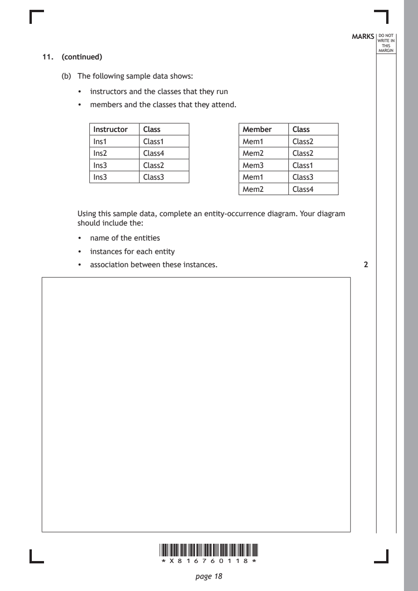
Selectable page text
MARKS DO NOT
WRITE IN
THIS
MARGIN
11. (continued)
(b) The following sample data shows:
• instructors and the classes that they run
• members and the classes that they attend.
Instructor Class Member Class
Ins1 Class1 Mem1 Class2
Ins2 Class4 Mem2 Class2
Ins3 Class2 Mem3 Class1
Ins3 Class3 Mem1 Class3
Mem2 Class4
Using this sample data, complete an entity‑occurrence diagram. Your diagram
should include the:
• name of the entities
• instances for each entity
• association between these instances. 2
*X816760118*
page 18PDF page 19
Question 12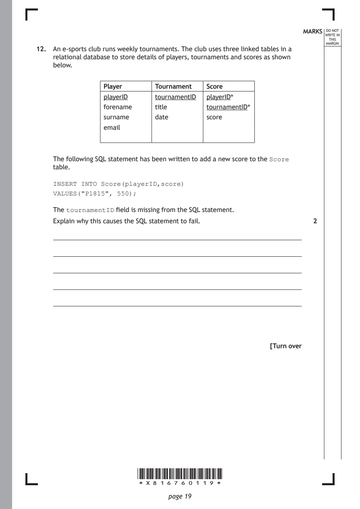
Selectable page text
MARKS DO NOT
WRITE IN
THIS
MARGIN
12. An e‑sports club runs weekly tournaments. The club uses three linked tables in a
relational database to store details of players, tournaments and scores as shown
below.
Player Tournament Score
playerID tournamentID playerID*
forename title tournamentID*
surname date score
email
The following SQL statement has been written to add a new score to the
Score
table.
INSERT INTO Score(playerID,score)
VALUES("P1815", 550);
The field is missing from the SQL statement.
tournamentID
Explain why this causes the SQL statement to fail. 2
[Turn over
*X816760119*
page 19PDF page 20
Question 13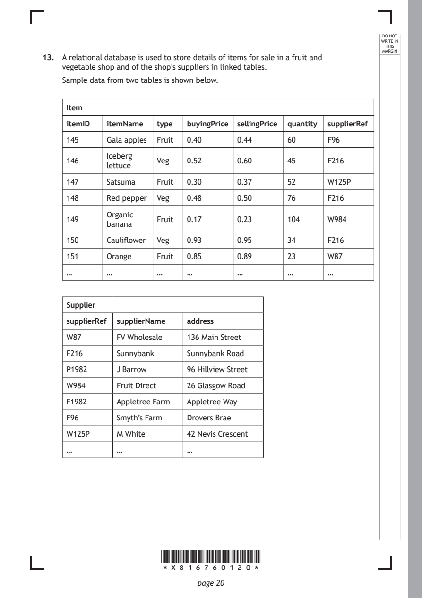
Selectable page text
DO NOT
WRITE IN
THIS
MARGIN
13. A relational database is used to store details of items for sale in a fruit and
vegetable shop and of the shop’s suppliers in linked tables.
Sample data from two tables is shown below.
Item
itemID itemName type buyingPrice sellingPrice quantity supplierRef
145 Gala apples Fruit 0.40 0.44 60 F96
Iceberg
146 Veg 0.52 0.60 45 F216
lettuce
147 Satsuma Fruit 0.30 0.37 52 W125P
148 Red pepper Veg 0.48 0.50 76 F216
Organic
149 Fruit 0.17 0.23 104 W984
banana
150 Cauliflower Veg 0.93 0.95 34 F216
151 Orange Fruit 0.85 0.89 23 W87
… … … … … … …
Supplier
supplierRef supplierName address
W87 FV Wholesale 136 Main Street
F216 Sunnybank Sunnybank Road
P1982 J Barrow 96 Hillview Street
W984 Fruit Direct 26 Glasgow Road
F1982 Appletree Farm Appletree Way
F96 Smyth’s Farm Drovers Brae
W125P M White 42 Nevis Crescent
… … …
*X816760120*
page 20PDF page 21
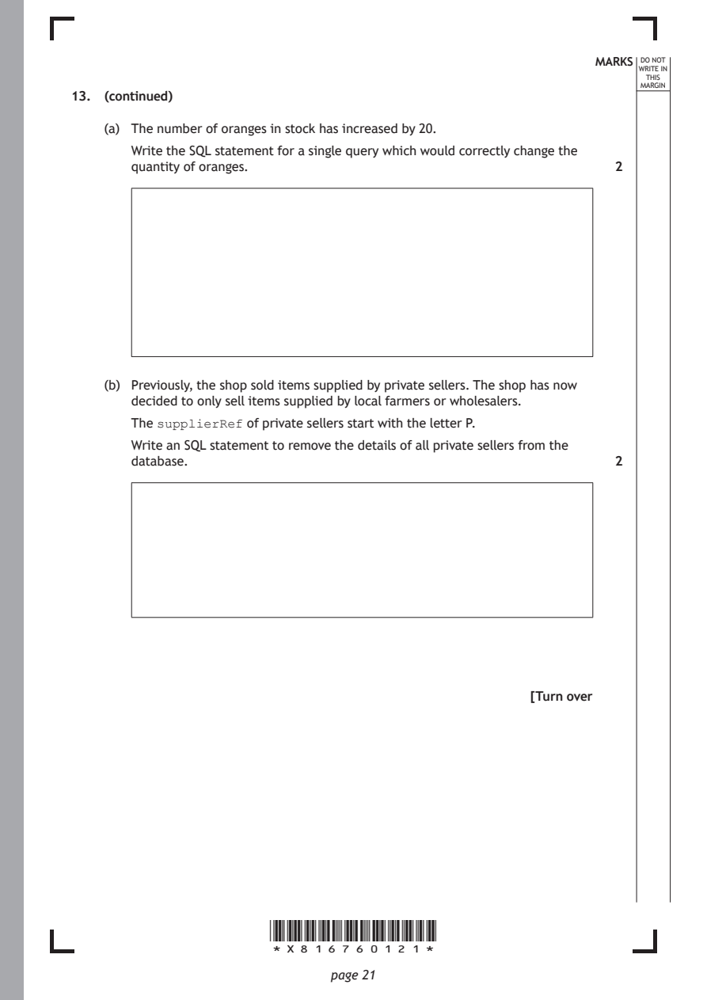
Selectable page text
MARKS DO NOT
WRITE IN
THIS
MARGIN
13. (continued)
(a) The number of oranges in stock has increased by 20.
Write the SQL statement for a single query which would correctly change the
quantity of oranges. 2
(b) Previously, the shop sold items supplied by private sellers. The shop has now
decided to only sell items supplied by local farmers or wholesalers.
The of private sellers start with the letter P.
supplierRef
Write an SQL statement to remove the details of all private sellers from the
database. 2
[Turn over
*X816760121*
page 21PDF page 22
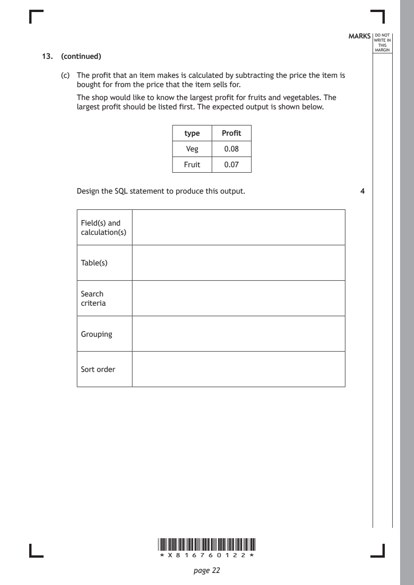
Selectable page text
MARKS DO NOT
WRITE IN
THIS
MARGIN
13. (continued)
(c) The profit that an item makes is calculated by subtracting the price the item is
bought for from the price that the item sells for.
The shop would like to know the largest profit for fruits and vegetables. The
largest profit should be listed first. The expected output is shown below.
type Profit
Veg 0.08
Fruit 0.07
Design the SQL statement to produce this output. 4
Field(s) and
calculation(s)
Table(s)
Search
criteria
Grouping
Sort order
*X816760122*
page 22PDF page 23
Question 14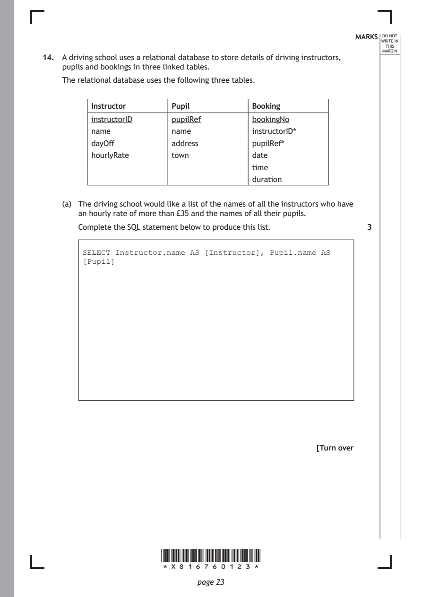
Selectable page text
MARKS DO NOT
WRITE IN
THIS
MARGIN
14. A driving school uses a relational database to store details of driving instructors,
pupils and bookings in three linked tables.
The relational database uses the following three tables.
Instructor Pupil Booking
instructorID pupilRef bookingNo
name name instructorID*
dayOff address pupilRef*
hourlyRate town date
time
duration
(a) The driving school would like a list of the names of all the instructors who have
an hourly rate of more than £35 and the names of all their pupils.
Complete the SQL statement below to produce this list. 3
SELECT Instructor.name AS [Instructor], Pupil.name AS
[Pupil]
[Turn over
*X816760123*
page 23PDF page 24
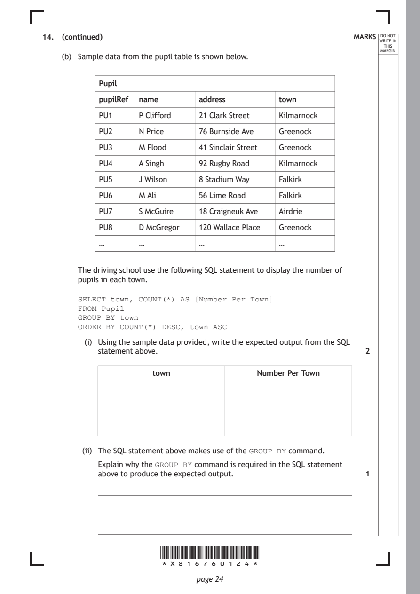
Selectable page text
14. (continued) MARKS DO NOT
WRITE IN
THIS
MARGIN
(b) Sample data from the pupil table is shown below.
Pupil
pupilRef name address town
PU1 P Clifford 21 Clark Street Kilmarnock
PU2 N Price 76 Burnside Ave Greenock
PU3 M Flood 41 Sinclair Street Greenock
PU4 A Singh 92 Rugby Road Kilmarnock
PU5 J Wilson 8 Stadium Way Falkirk
PU6 M Ali 56 Lime Road Falkirk
PU7 S McGuire 18 Craigneuk Ave Airdrie
PU8 D McGregor 120 Wallace Place Greenock
… … … …
The driving school use the following SQL statement to display the number of
pupils in each town.
SELECT town, COUNT(*) AS [Number Per Town]
FROM Pupil
GROUP BY town
ORDER BY COUNT(*) DESC, town ASC
(i) Using the sample data provided, write the expected output from the SQL
statement above. 2
town Number Per Town
(ii) The SQL statement above makes use of the command.
GROUP BY
Explain why the command is required in the SQL statement
GROUP BY
above to produce the expected output. 1
*X816760124*
page 24PDF page 25
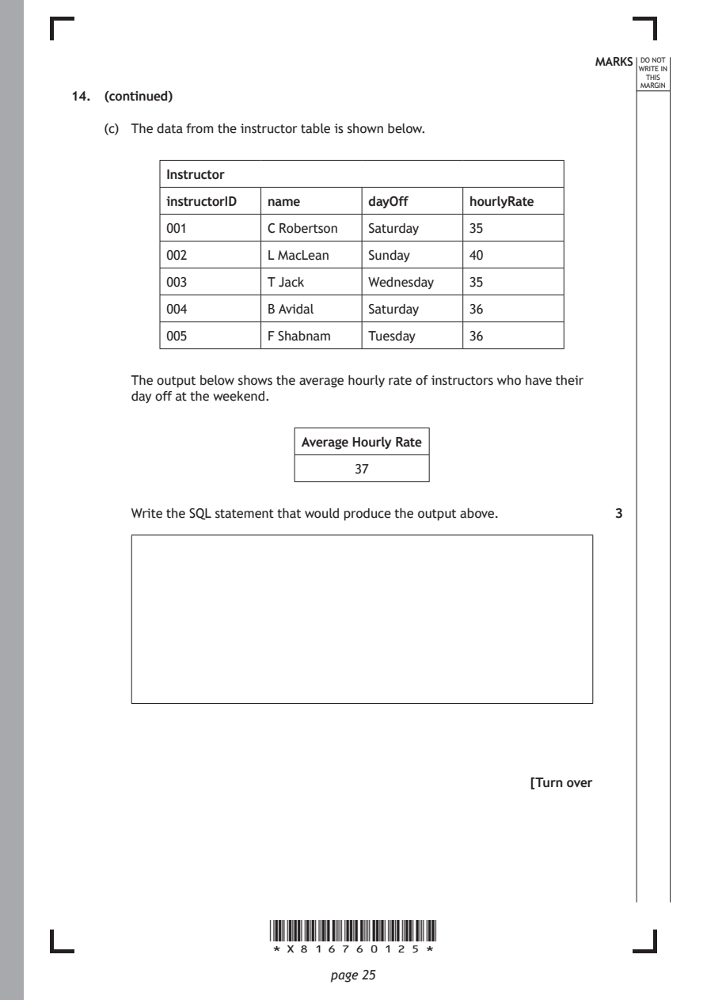
Selectable page text
MARKS DO NOT
WRITE IN
THIS
MARGIN
14. (continued)
(c) The data from the instructor table is shown below.
Instructor
instructorID name dayOff hourlyRate
001 C Robertson Saturday 35
002 L MacLean Sunday 40
003 T Jack Wednesday 35
004 B Avidal Saturday 36
005 F Shabnam Tuesday 36
The output below shows the average hourly rate of instructors who have their
day off at the weekend.
Average Hourly Rate
37
Write the SQL statement that would produce the output above. 3
[Turn over
*X816760125*
page 25PDF page 26
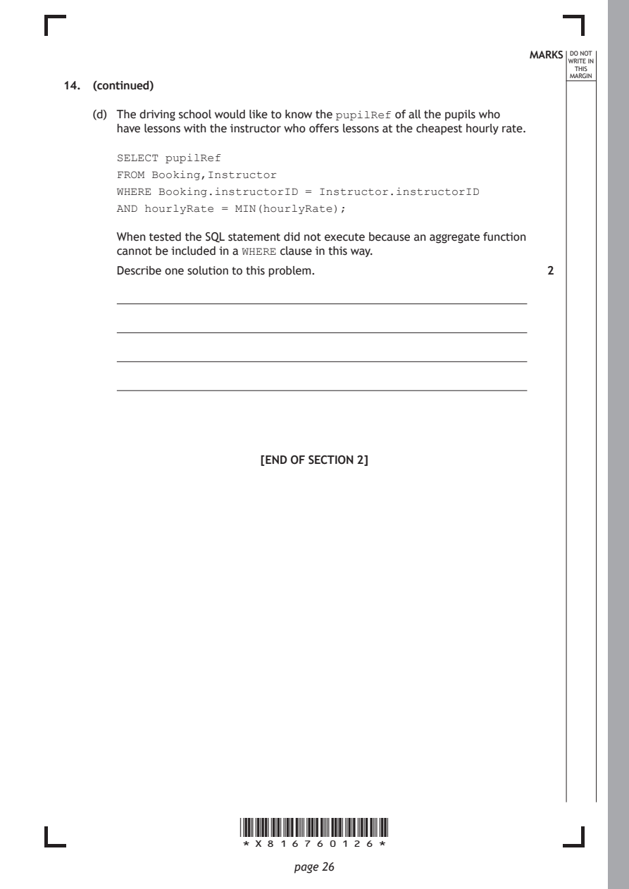
Selectable page text
MARKS DO NOT
WRITE IN
THIS
MARGIN
14. (continued)
(d) The driving school would like to know the of all the pupils who
pupilRef
have lessons with the instructor who offers lessons at the cheapest hourly rate.
SELECT pupilRef
FROM Booking,Instructor
WHERE Booking.instructorID = Instructor.instructorID
AND hourlyRate = MIN(hourlyRate);
When tested the SQL statement did not execute because an aggregate function
cannot be included in a clause in this way.
WHERE
Describe one solution to this problem. 2
[END OF SECTION 2]
*X816760126*
page 26PDF page 27
Question 15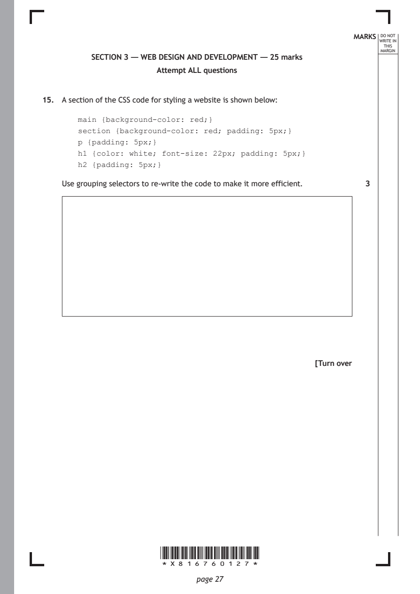
Selectable page text
MARKS DO NOT
WRITE IN
THIS
MARGIN
SECTION 3 — WEB DESIGN AND DEVELOPMENT — 25 marks
Attempt ALL questions
15. A section of the CSS code for styling a website is shown below:
main {background-color: red;}
section {background-color: red; padding: 5px;}
p {padding: 5px;}
h1 {color: white; font-size: 22px; padding: 5px;}
h2 {padding: 5px;}
Use grouping selectors to re‑write the code to make it more efficient. 3
[Turn over
*X816760127*
page 27PDF page 28
Question 16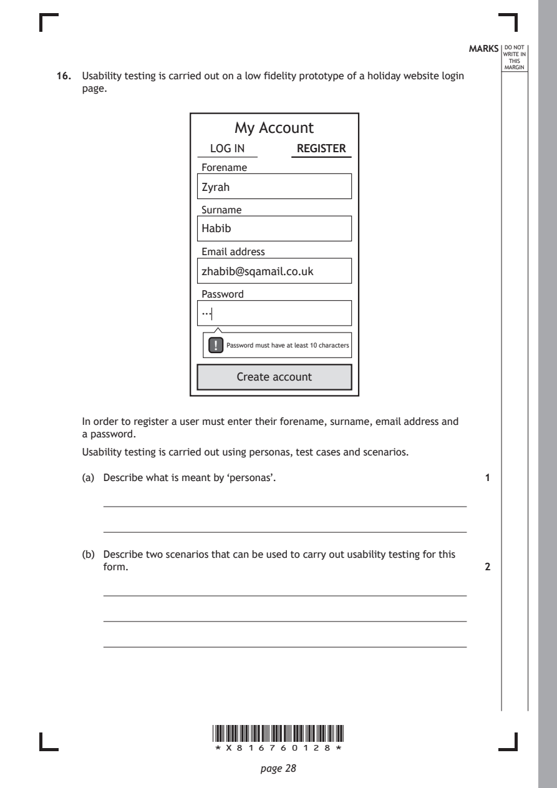
Selectable page text
MARKS DO NOT
WRITE IN
THIS
MARGIN
16. Usability testing is carried out on a low fidelity prototype of a holiday website login
page.
My Account
LOG IN REGISTER
Forename
Zyrah
Surname
Habib
Email address
zhabib@sqamail.co.uk
Password
...
! Password must have at least 10 characters
Create account
In order to register a user must enter their forename, surname, email address and
a password.
Usability testing is carried out using personas, test cases and scenarios.
(a) Describe what is meant by ‘personas’. 1
(b) Describe two scenarios that can be used to carry out usability testing for this
form. 2
*X816760128*
page 28PDF page 29
Question 17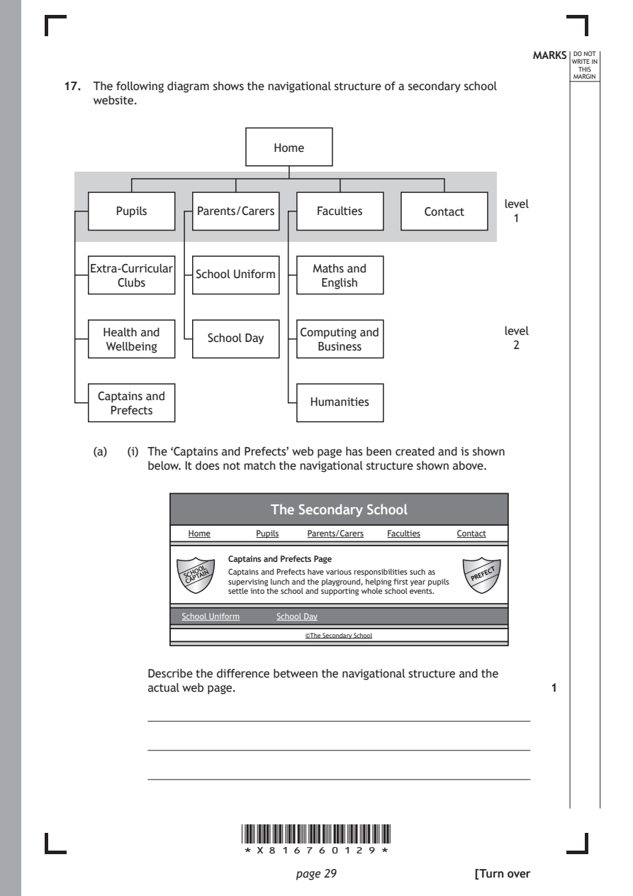
Selectable page text
MARKS DO NOT
WRITE IN
THIS
MARGIN
17. The following diagram shows the navigational structure of a secondary school
website.
Home
level
Pupils Parents/Carers Faculties Contact
1
Extra-Curricular Maths and
School Uniform
Clubs English
Health and Computing and level
School Day
Wellbeing Business 2
Captains and
Humanities
Prefects
(a) (i) The ‘Captains and Prefects’ web page has been created and is shown
below. It does not match the navigational structure shown above.
The Secondary School
Home Pupils Parents/Carers Faculties Contact
Captains and Prefects Page
S C C A H P O T O A L IN C su a p p e ta rv in is s i n a g n d lu P n r c e h f e a c n t d s t h h a e v e p l v a a y r g io ro u u s n r d e , s p h o e n lp s i i n b g il i f t i i r e s s t s y u e c a h r p as upils PREFECT
settle into the school and supporting whole school events.
School Uniform School Day
©The Secondary School
Describe the difference between the navigational structure and the
actual web page. 1
*X816760129*
page 29 [Turn overPDF page 30
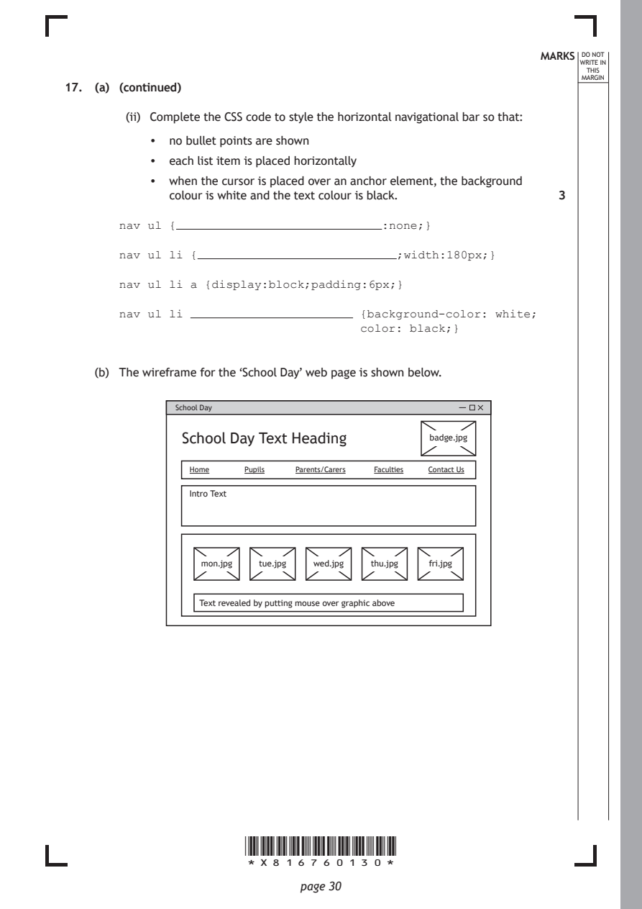
Selectable page text
MARKS DO NOT
WRITE IN
THIS
MARGIN
17. (a) (continued)
(ii) Complete the CSS code to style the horizontal navigational bar so that:
• no bullet points are shown
• each list item is placed horizontally
• when the cursor is placed over an anchor element, the background
colour is white and the text colour is black. 3
��������������������������������������������������������������
nav ul { :none;}
������������������������������������������������������������
nav ul li { ;width:180px;}
nav ul li a {display:block;padding:6px;}
�������������������������������������������������
nav ul li {background-color: white;
color: black;}
(b) The wireframe for the ‘School Day’ web page is shown below.
School Day
School Day Text Heading badge.jpg
Home Pupils Parents/Carers Faculties Contact Us
Intro Text
mon.jpg tue.jpg wed.jpg thu.jpg fri.jpg
Text revealed by putting mouse over graphic above
*X816760130*
page 30PDF page 31
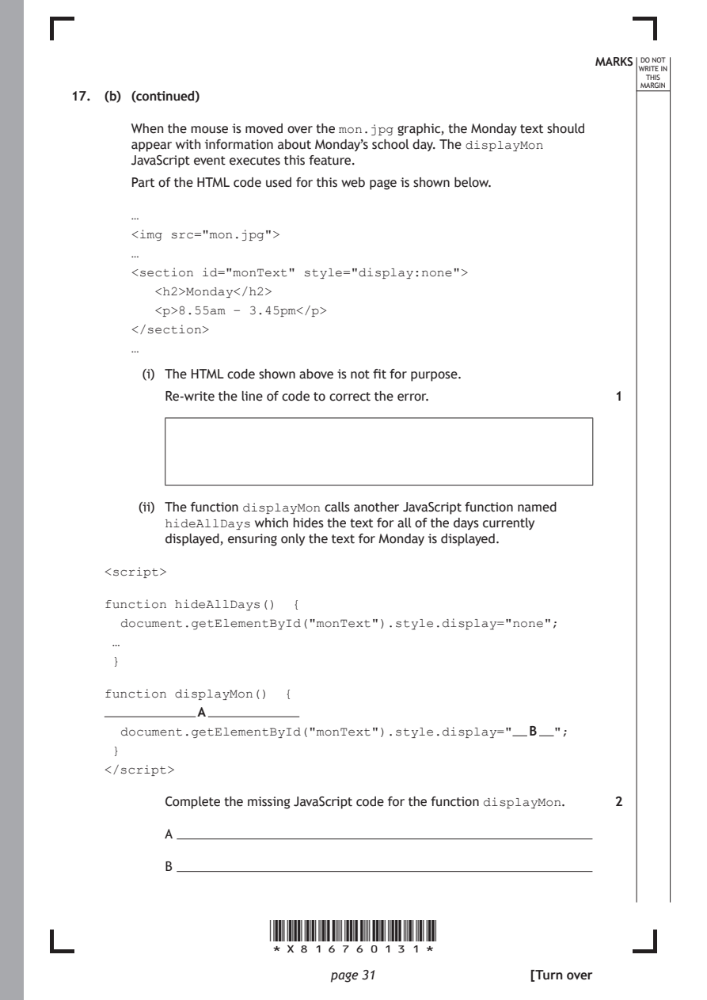
Selectable page text
MARKS DO NOT
WRITE IN
THIS
MARGIN
17. (b) (continued)
When the mouse is moved over the graphic, the Monday text should
mon.jpg
appear with information about Monday’s school day. The
displayMon
JavaScript event executes this feature.
Part of the HTML code used for this web page is shown below.
…
<img src="mon.jpg">
…
<section id="monText" style="display:none">
<h2>Monday</h2>
<p>8.55am – 3.45pm</p>
</section>
…
(i) The HTML code shown above is not fit for purpose.
Re‑write the line of code to correct the error. 1
(ii) The function calls another JavaScript function named
displayMon
which hides the text for all of the days currently
hideAllDays
displayed, ensuring only the text for Monday is displayed.
<script>
function hideAllDays() {
document.getElementById("monText").style.display="none";
…
}
function displayMon() {
������������������������� A �������������������������
���� B ����
document.getElementById("monText").style.display=" ";
}
</script>
Complete the missing JavaScript code for the function . 2
displayMon
A
B
*X816760131*
page 31 [Turn overPDF page 32
Question 18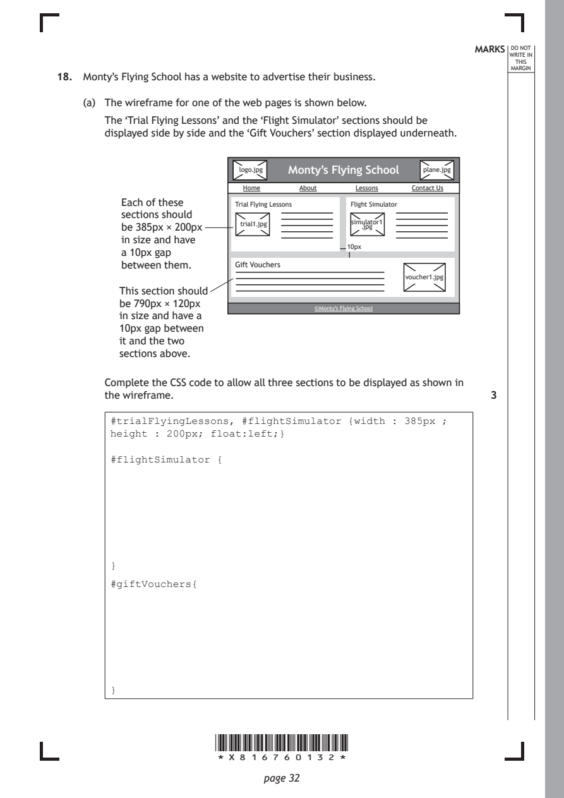
Selectable page text
MARKS DO NOT
WRITE IN
THIS
MARGIN
18. Monty’s Flying School has a website to advertise their business.
(a) The wireframe for one of the web pages is shown below.
The ‘Trial Flying Lessons’ and the ‘Flight Simulator’ sections should be
displayed side by side and the ‘Gift Vouchers’ section displayed underneath.
logo.jpg Monty’s Flying School plane.jpg
Home About Lessons Contact Us
Each of these
Trial Flying Lessons Flight Simulator
sections should
be 385px × 200px trial1.jpg sim . u j l p a g tor1
in size and have
10px
a 10px gap
between them. Gift Vouchers
voucher1.jpg
This section should
be 790px × 120px
©Monty’s Flying School
in size and have a
10px gap between
it and the two
sections above.
Complete the CSS code to allow all three sections to be displayed as shown in
the wireframe. 3
#trialFlyingLessons, #flightSimulator {width : 385px ;
height : 200px; float:left;}
#flightSimulator {
}
#giftVouchers{
}
*X816760132*
page 32PDF page 33
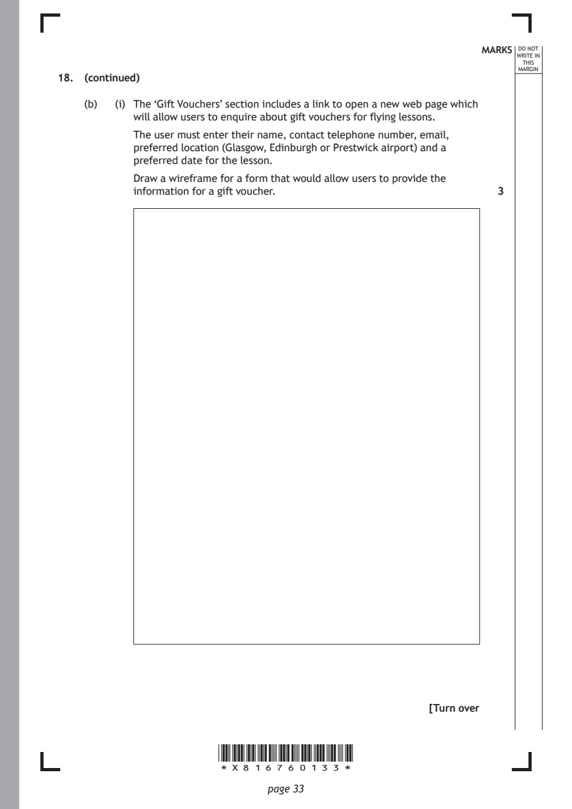
Selectable page text
MARKS DO NOT
WRITE IN
THIS
MARGIN
18. (continued)
(b) (i) The ‘Gift Vouchers’ section includes a link to open a new web page which
will allow users to enquire about gift vouchers for flying lessons.
The user must enter their name, contact telephone number, email,
preferred location (Glasgow, Edinburgh or Prestwick airport) and a
preferred date for the lesson.
Draw a wireframe for a form that would allow users to provide the
information for a gift voucher. 3
[Turn over
*X816760133*
page 33PDF page 34
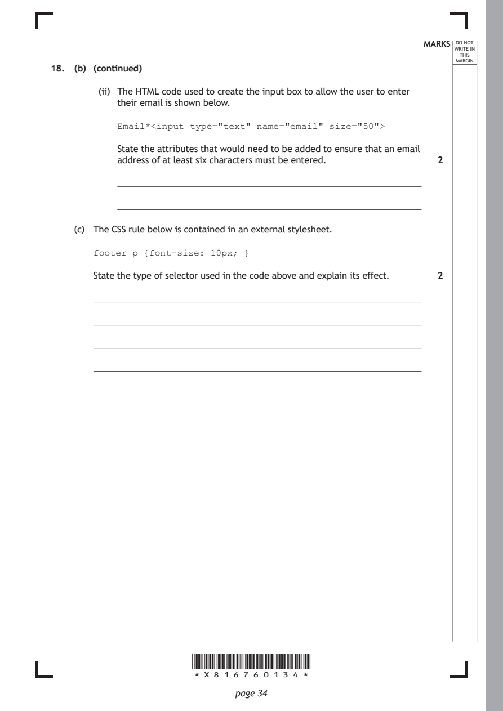
Selectable page text
MARKS DO NOT
WRITE IN
THIS
MARGIN
18. (b) (continued)
(ii) The HTML code used to create the input box to allow the user to enter
their email is shown below.
Email*<input type="text" name="email" size="50">
State the attributes that would need to be added to ensure that an email
address of at least six characters must be entered. 2
(c) The CSS rule below is contained in an external stylesheet.
footer p {font-size: 10px; }
State the type of selector used in the code above and explain its effect. 2
*X816760134*
page 34PDF page 35
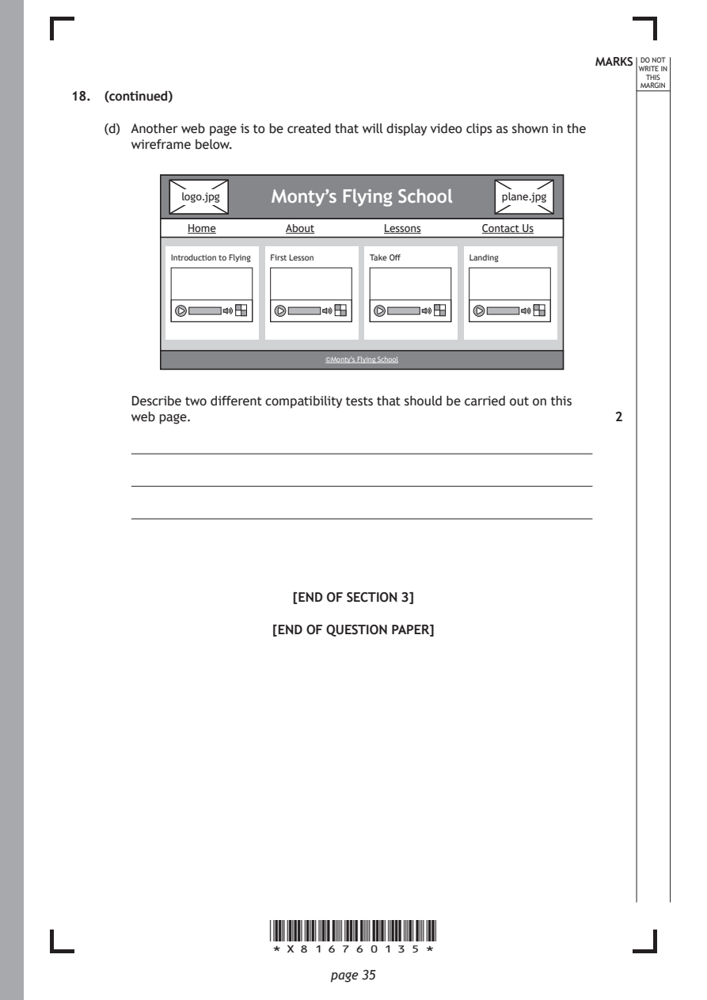
Selectable page text
MARKS DO NOT
WRITE IN
THIS
MARGIN
18. (continued)
(d) Another web page is to be created that will display video clips as shown in the
wireframe below.
logo.jpg Monty’s Flying School plane.jpg
Home About Lessons Contact Us
Introduction to Flying First Lesson Take Off Landing
©Monty’s Flying School
Describe two different compatibility tests that should be carried out on this
web page. 2
[END OF SECTION 3]
[END OF QUESTION PAPER]
*X816760135*
page 35PDF page 36
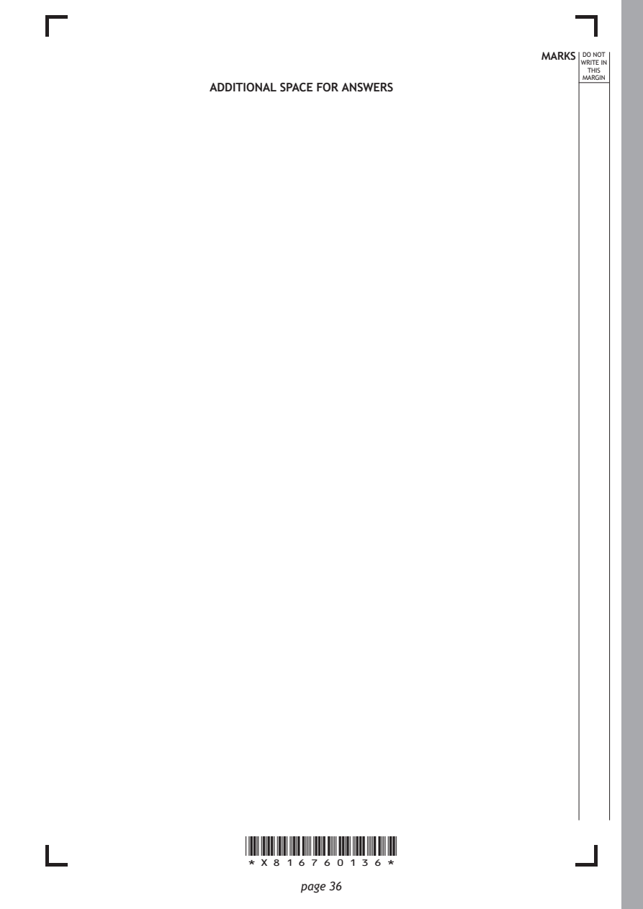
Selectable page text
MARKS DO NOT
WRITE IN
THIS
MARGIN
ADDITIONAL SPACE FOR ANSWERS
*X816760136*
page 36PDF page 37
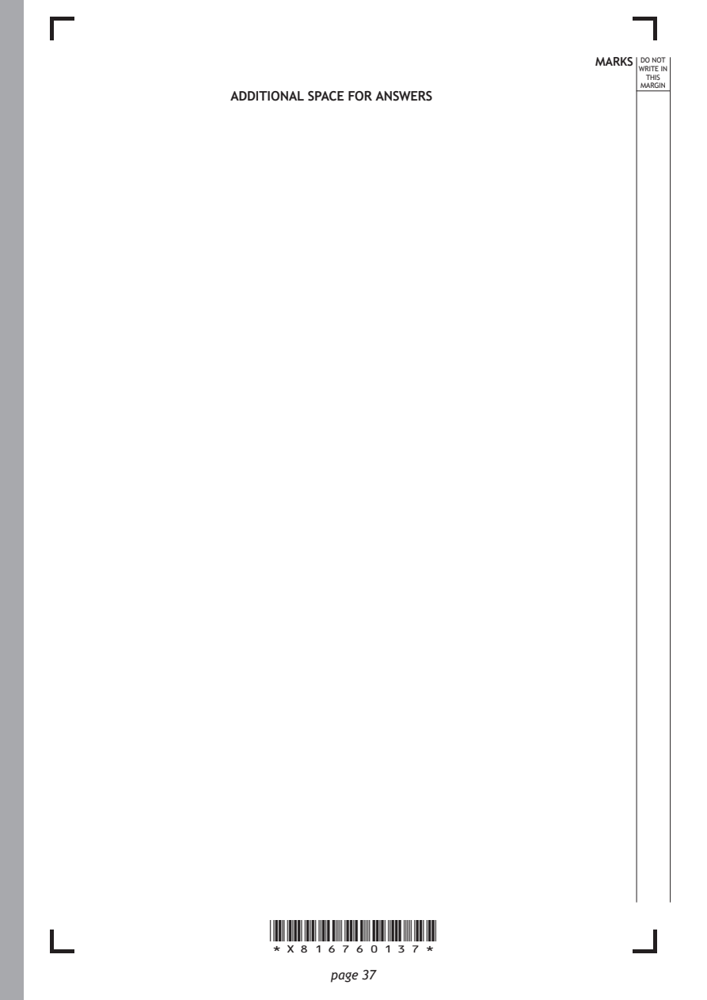
Selectable page text
MARKS DO NOT
WRITE IN
THIS
MARGIN
ADDITIONAL SPACE FOR ANSWERS
*X816760137*
page 37PDF page 38
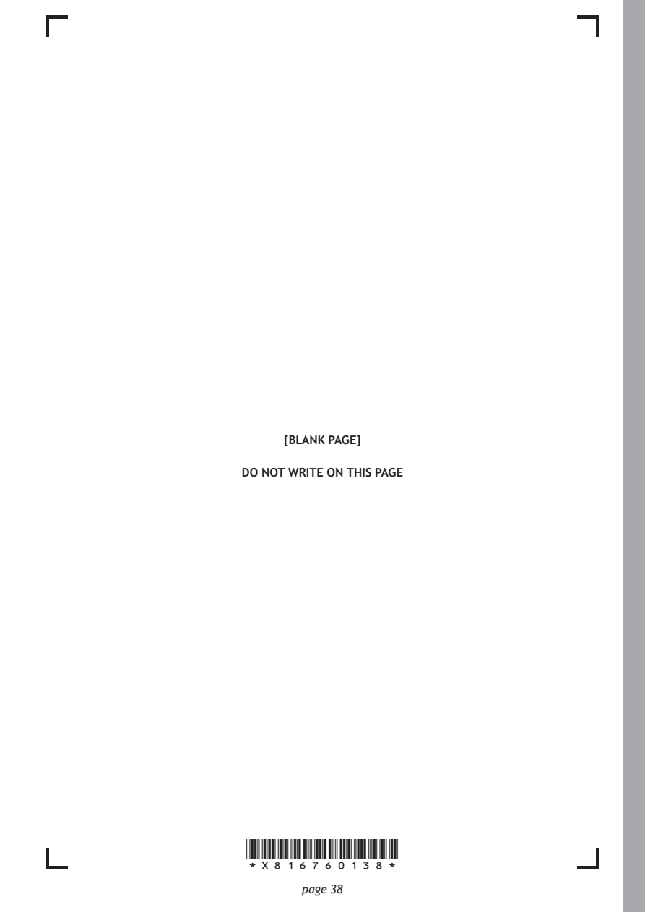
Selectable page text
[BLANK PAGE]
DO NOT WRITE ON THIS PAGE
*X816760138*
page 38PDF page 39
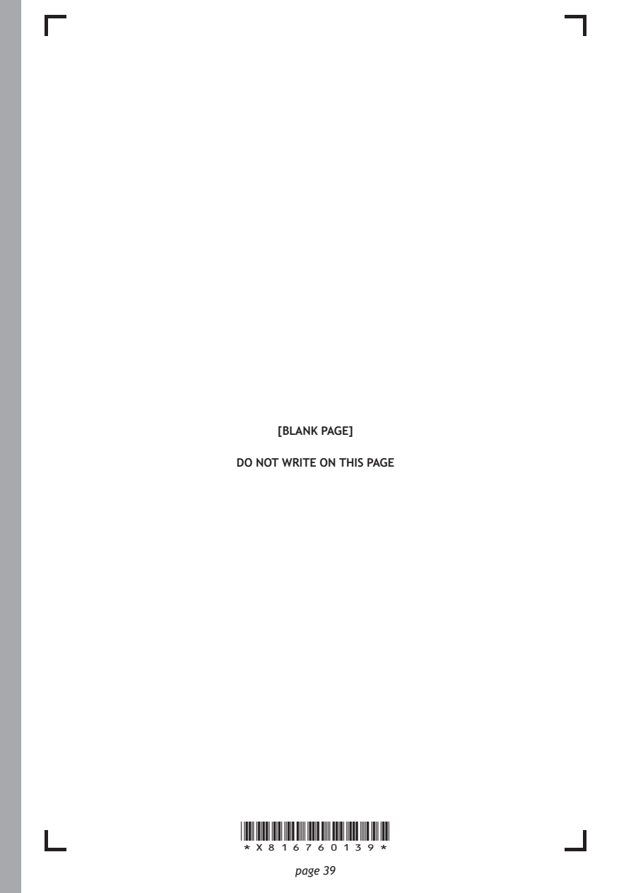
Selectable page text
[BLANK PAGE]
DO NOT WRITE ON THIS PAGE
*X816760139*
page 39PDF page 40

Selectable page text
[BLANK PAGE]
DO NOT WRITE ON THIS PAGE
*X816760140*
page 40